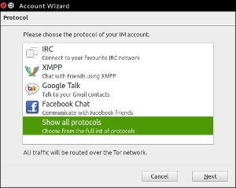
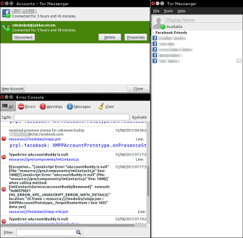

Tor Messenger
The Tor Project recently unveiled a public beta of its latest free-software application, a chat client called Tor Messenger. As with the Tor Browser, Tor Messenger is a friendly fork of an existing program, rewritten to incorporate Tor as the only network-transport mechanism. That makes using the application "private by default," so to speak—although there is always the risk of undiscovered bugs that could undermine a user's Tor-based anonymity. Nevertheless, Tor Messenger is poised to make chatting via instant messages (IM), social networks, and IRC a substantially safer prospect.
The first Tor Messenger public beta was announced
in October. The most recent update, beta 4, was released
December 8. For the moment, Tor Messenger does not have a dedicated
page on the Tor Project site—presumably owing to its beta
status. The posts announcing its availability, for instance, warn
users in bold text that: "At-risk users should not depend on it
for their privacy and safety.
" More details about Tor Messenger
(such as the FAQ
and the issue
tracker) are available on the Tor wiki, however.

Builds have been provided for Windows, Mac OS X, and Linux (the latter in both 32-bit and 64-bit form). The executables are self-contained, so the downloads can be unpacked and run from any location. Tor Messenger is a fork of the XUL-based cross-platform chat client Instantbird. Although Instantbird is not a Mozilla application, its XUL underpinnings do simplify Tor Messenger development, since Tor Browser is a fork of Firefox. The blog post noted, for example, that Tor developers plan to port Tor Browser's update-checking mechanism to Tor Messenger.
Like Instantbird, Tor Messenger supports a range of popular chat and messaging protocols; the current list includes XMPP, IRC, Google Talk, Odnoklassniki, Twitter direct messaging, Yahoo Instant Messenger, and Facebook Chat.
The key is that Tor Messenger routes traffic for all of these protocols through the Tor network. When starting up, the application opens a Tor circuit, after which the user can log in to any available service. It is worth noting, however, that this mechanism serves only to hide the user's endpoint of the connection; the session traffic exits the Tor network at some randomly selected exit node and connects to the chat service's public server. Thus, an adversary monitoring the server could still see that the user has logged in (if that presence information is public or if the adversary has compromised the server).
This is different than connecting to an IM service that operates entirely within Tor (i.e., as a Tor hidden service). Although several such networks do exist, using Tor Messenger to connect to Facebook or Google Talk necessitates having one's traffic re-enter the public Internet. Using a Tor hidden service for IM certainly offers the maximum amount of protection; using Tor Messenger to connect to a public service allows a user to access that service where it might otherwise be blocked and guards against attackers determining the user's actual location.
Similarly, the messaging protocol used for the chat might not be end-to-end secure by default; it may not be encrypted and the service provider may store old messages. To keep conversations private, Tor Messenger supports the Off-the-Record Messaging (OTR) protocol, with which encrypted chat messages can be exchanged over any IM system. The blog posts note that the Tor team wrote the OTR plugin and is working to get it accepted in Instantbird upstream, since it has obvious value for users even when Tor is not the transport.
IRC handling is a bit more complicated than supporting the various IM protocols. OTR can encrypt one-on-one chats, but is not useful for public channels. There is an additional barrier, however, in that many popular IRC network operators block incoming connections from Tor exit nodes. Freenode, perhaps the most popular IRC provider in the free-software world, does not allow connections from Tor exit nodes. Sadly, Freenode also shut down its Tor hidden-service entry point in February of 2015, and has announced no plans for its return. The OFTC IRC network's policy does permit connections from Tor—although individual channels may not, and the network is reported to periodically block or limit Tor connections when it detects spam or other abuse.
One final factor to consider is that Tor Messenger, like Tor Browser and general Tor access, requires connecting to a working Tor relay. For users in locations where known Tor relays are blocked at the IP-address level, Tor Messenger supports connecting with bridge relays (which are unadvertised and, in some cases, use unpublished IP addresses) and over pluggable transports (which can disguise the Tor session traffic as another connection type).
Let's talk?
Getting started with Tor Messenger is no different than setting up any other modern chat client. The only tricky steps for most users are likely to be the restrictions imposed by service providers. Unfortunately, those restrictions, at present, constitute a lengthy list. Google Talk, for example, requires that two-factor authentication be enabled for users logging in from Tor (which is reasonable), but also requires that the user's Google Account has not been automatically migrated from Google Talk to Google Hangouts (which is far less reasonable, since the user has little or no say in the matter).

In my own tests, Facebook Chat worked (after configuring a Tor-Messenger–specific password), though Google Talk did not. Yahoo Instant Messenger and AOL Instant Messenger both returned error codes that Tor Messenger was unable to cope with, and OFTC appears to be blocking Tor traffic from the exit nodes that I was able to establish a circuit through. Eventually, I was able to set up a new account on a Tor-friendly XMPP service but, that being a new account, there were not many opportunities to put "chatting" to the test.
In the long run, the Tor Project likely has the resources to overcome most of these service-specific hurdles. For instance, when a service detects that the user is logging in from a strange, new location (as is usually true for Tor exit nodes), it may ask the user to authenticate through a web page. Right now, Tor Messenger cannot handle these requests, nor can Tor Browser even when running on the same machine: both Tor Messenger and Tor Browser establish their own, separate Tor circuits, so they appear to come from different locations. If it were possible to share the same tor circuit between the applications, the problem would be solved. This is on the project's to-do list, but it will not be a quick fix.
Those issues aside, using Tor as a transport will likely always come with some complications. For instance, Tor circuits have a six-hour lifetime, for security reasons and to reduce load on the Tor network. But that means that Tor Messenger sessions need to be killed and restarted after that six-hour mark.
There are also user-interface challenges to consider. As it stands now, upgrading from one Tor Messenger release to the next requires the user to manually copy their saved OTR keys from the old folder to the new one. Not doing so means old contacts will need to be re-authenticated. Fixing this, also, is on the to-do list. A more serious UI issue is how to allow users to manage bridges; the addition of bridge support was one of the changes in the beta-4 update, but so far it requires low-level editing of the about:config configuration.
Last but not least, speaking of about:config, several
commenters on the Tor Messenger blog posts inquired about whether it
was wise to build the application on XUL at all. Since rumor has it that
Mozilla is leaning toward dropping XUL from future Firefox and
Thunderbird releases, perhaps on a very short time frame, it could
become an unwelcome maintenance burden. On that
point, when asked what would happen if Mozilla drops XUL, Tor
developer "gk" said simply, "Well, Tor Browser includes Firefox (+ a
pile of patches), so we'll do the same.
"
Tor Messenger in its current state comes with a lot of limitations,
particularly for getting new users up and running. But many of the
issues are imposed by the IM and IRC service operators, so the best
Tor developers can do is push forward fixing bugs and try to persuade
uncooperative service providers that Tor Messenger users are worth
listening to. For users, hopefully Tor Messenger develops into a
robust tool, because the alternatives on the desktop (e.g., manually
configuring proxy servers) are not pretty.
Mobile device users have had options like ChatSecure for quite some
time, but a simple start-it-up-and-talk application for desktop
systems is way overdue.
| Index entries for this article | |
|---|---|
| Security | Anonymity |
| Security | Tools/Tor |
Posted Dec 10, 2015 9:11 UTC (Thu)
by JdGordy (subscriber, #70103)
[Link] (2 responses)
Worse, isnt tor all about anonymity and secrecy? Logging into facebook/google through it seems like the opposite of that?!
Posted Dec 11, 2015 5:29 UTC (Fri)
by NightMonkey (subscriber, #23051)
[Link]
Posted Dec 14, 2015 14:30 UTC (Mon)
by robbe (guest, #16131)
[Link]
There is no one browser connection. Modern Tor Browser opens a new „circuit“ for each website. So if the French National Police, say, sends you a link to http://www.police-nationale.interieur.gouv.fr/ the connection to this site will come from a new exit node, not the one you used to browse Jihaddi Pig Porn websites.
> Logging into facebook/google through it seems like the opposite
I’m posting this via Tor Browser while being logged in to LWN. This protects the fact that I am using LWN right now (or at all) from the network provider (think: employer, hotel, coffee shop), its ISP and some intelligence services.
Posted Dec 10, 2015 12:19 UTC (Thu)
by jnareb (subscriber, #46500)
[Link]
Posted Dec 17, 2015 5:02 UTC (Thu)
by Mook (subscriber, #71173)
[Link]
Note that over the last few days people have been reporting (to Instantbird) issues with connecting to Facebook; they may be shutting down their (deprecated since April 2014) XMPP gateway. I would assume the same for Tor Messenger since they share the protocol code.
Friendly fork indeed; I believe the Tor Messenger folks have been actively working with the Instantbird folks. Given that the majority of the interaction with the outside world is in the various protocols, a hard fork of Mozilla-things due to declining XUL support seems more feasible than Tor Browser (which does need to keep up with web platform changes). I have no actual data towards how any of the parties involved plan to deal with that, though.
Tor Messenger
Tor Messenger
Tor Messenger
> identify the tor browser connection?
> of that?!
Vuvuzela private messaging system
Tor Messenger